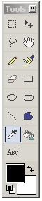

Color Picker Tool
|
 The Color Picker Tool (Tools-->Color Picker) is used to 'grab' a currently used color from the canvas (not the active layer as most tools operate on). For example, if there is a particularly nice shade of green on the canvas that you would like to make your foreground color, just click on the area with the right mouse button. The color for the foreground will be automatically updated. The same is true for the background color. Just click on the area that has the color you want with the left mouse button.
|